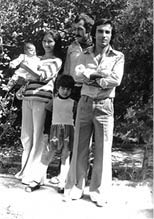
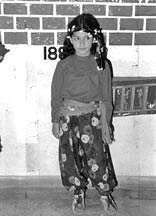
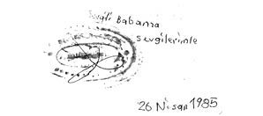
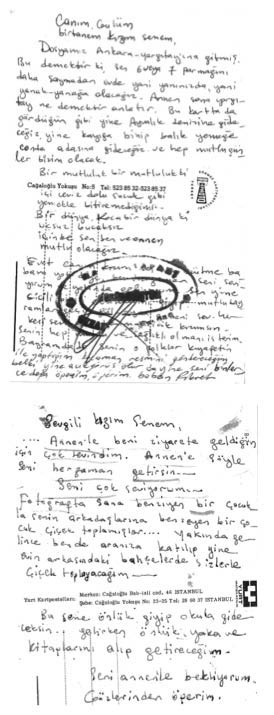

“Genç Bir Kızım, Babamı Hiç Öpmemişim. Böyle Bir Haksızlık Olabilir mi?”
Senem Babaoğlu12
12 Eylül döneminde babam Fikret Babaoğlu, Maraş Lisesi’nde felsefe öğretmeniydi. O dönemde TÖB-DER örgütlenmesinin içinde yer aldı. THKP-C, Dev-Savaş/Acilciler örgütlenmesinden anayasal düzeni değiştirmek ve düşünce açıklamak suçundan, 141.,142., 146. maddelerden yargılandı. 7 yıl cezaevinde yattı. Bunun 2 yılını Maraş Cezaevi, 5 yılını ise Hatay Kapalı Cezaevi’nde geçirdi.
Maraş Olayları’ndan sonra babamın tayini Antep’e çıkmış. Halamlar Alevi oldukları için lise eğitimlerine Antep’te devam etmek zorunda kalmışlar. Babam, 12 Eylül Darbesi’nde tutuklanmadan önce 1 yıl kaçağa düşmüş ve Antep’te öğretmenlik görevine devam edememiş. Babam, kaçak olunca annem görev yeri olan Maraş’ta hazine avukatlığından ayrılmak zorunda kalmış ve Maraş’ta yaşadığı süre boyuca da tekrar çalışamamış. Bunlara rağmen Alevi kimliğimizi, kendi içimizde çok gizlediğimizi hatırlamıyorum, çünkü büyük bir aileydik.
Darbe Oluyor, Babam Gidiyor
Maraş Olayları sırasında ve arkasından gelen 12 Eylül Darbesi’nde Maraş’taydık. Annem ve babam olaylardan sonra İzmir’e yerleşme kararı vermişler ama onların hiçbirisi hayata geçirilemedi. Babam İzmir’de bir yıl kadar kaçak yaşadı. Bu esnada aranmalar ve ev baskınları devam etti. Aile bu baskıyı yaşıyordu. Bu kaçaklık döneminde yapılan ev baskınlarını, hatta o baskınlar sırasında çok ağladığımı hatırlıyorum. Mesela kare kare bazı sahneler geliyor gözümün önüne. Babamın kaçakken eve geldiğini, polislerin evi bastığını çocuk olmama rağmen hayal meyal de olsa hatırlıyorum. Kapılar çok sert çalınmıştı mesela. Annemin çok hızlı bir şekilde muslukları açtığını, babamın atlayarak bir yerden koştuğunu hatırlıyorum. Başka bir eve gitmiş. Halamın “Babasının geldiğini söylemesin!” diye ağlayarak beni merdivenden kucakladığını biliyorum.

Senem, ailesiyle Maraş’ta
Babam İzmir’de 5 Kasım 1980’de yakalanmış. Oradan işkencehane diye bilinen Maraş Eğitim Enstitüsü’ne getirilmiş. Burada 11 ay boyunca sistematik işkence olarak bilinen 37 çeşit işkence yönteminin hemen hemen hepsine maruz kalmış. Böyle bir babanın evladıyım diyebilirim. Bunlar olurken ben 4 yaşındaymışım. Ailesi, babamın İzmir’den Maraş Eğitim Enstitüsü’ne getirildiğini biliyormuş; fakat içeride olanlardan kimsenin haberi yokmuş.
Annem ve babam Ankara’da üniversitede okurken tanışmışlar. Annem babamın örgütlü bir mücadele içinde olduğunu biliyormuş; fakat devletin bu denli bir tahribat yapabileceğini tahmin etmiyormuş. Babamın arkadaşlarını da o dönemde tanıyormuş. Annem yetiştirilme tarzı olarak çok kibar bir kadındır. Bu süreçte en büyük zorlukları ise kendisinin çektiğini söyleyebiliriz. Siyasi olarak hiçbir örgütlü mücadelenin içinde bulunmayan annem, Maraş Olayları, 12 Eylül, eşinin tutukluğu derken aydınlanma süreci yaşamaya başladığını hep söyler. Güçlü bir kadın olduğunu düşünüyorum. Maraş’ta yaşadığı yıllarda tek başına verdiği mücadele belki onu daha güçlü kıldı. Her şeyi yavaş yavaş anlamaya başlayıp sorguladığı yıllar geçirdi. Bunlar da dayanma gücünü artırmış.
Babamı ve arkadaşlarını tutukladıklarında bazılarının eşlerini de içeri aldılar. Sanıyorum çalışmadığı halde annemi avukat olmasından dolayı almıyorlar. Babamın Maraş’ta işkencede olduğu biliniyor ama görüşme mümkün değil. Sen başvur, avukatsın diyor annemin ailesi, annem görüşme talebiyle başvuruyor. Bir arkadaşı ile Enstitü’ye gidip duvarın üstünden bakıyorlarmış. “Aa diyormuş” annem, “Fikret’i gördüm”, “Evet, evet ben de gördüm!” diye arkadaşı da kendi eşini gösteriyormuş. Ama tabii o adamlar, o zaman, orada değiller, aşağıda hücrelerde işkence görüyorlar. Her kafası kel olanı kendi eşleri sanıyorlar. Enstitü’nün komutanı Yusuf Haznedaroğlu annemi çağırıyor. Araştırmışlar tabii annemin kim olduğunu, “Sen iyi bir ailenin çocuğusun, kocana söyle konuşsun” diyor. Babam türlü işkenceye rağmen 11 ay boyunca konuşmuyor.
Eğitim Enstitüsü’nden sonra Maraş Cezaevi’ne, daha sonra da Hatay Kapalı Cezaevi’ne sevk edildi. Tüm cezasını da Hatay’da tamamladı. Cezaevine gidişlerimi çok net hatırlıyorum. Ortaokul 1’e kadar tüm cezaevi görüşlerine gittim. Bayramlar, açık ve kapalı görüşler dahil, yani ailemin, annemin gidebildiği her görüşe götürüldüm. Ailemiz o konuda çok destek oldu. Zaten babaannem ve halalarımla altlı üstlü bir evde yaşadık.
Babamın çıkışına kadar Maraş’taki serüvenimiz devam etti. Bu durum aile içerisinde sorun yaratmadı. Çünkü biz her şeyi açık açık konuşuyorduk. Bu süreçte ne eşten, ne anadan, ne de evlattan bir şey saklandı. Belki de o anlamda çocukluğumuzu yaşadık diyebiliriz. Hiçbir zaman “sakın konuşma, kimseye anlatma” şeklinde bir telkin de olmadı. Daha çok şöyle bir çocuk psikolojisi oluştu:

Senem, ilkokul gösterisinde
İlkokulda belli bir arkadaş çevreniz var. Siz de babanızın içeride olduğunun bilincindesiniz artık. Çünkü o saklanabilecek bir duygu değil. Ben bu tür bir bocalamanın olduğunu mektuplardan da anlıyorum. Baban ne iş yapıyor diye soruyorlarmış herhalde ilkokuldaki sınıf arkadaşlarım, ben de bir utanma duygusu yaşamışım ki, bunu babama aksettirmişim. “Baban neden hapiste?” sorusunun yanıtını gerçekliğiyle anlatmış bir kişidir babam. O nedenle çok şanslıydım, çok örselenerek geçmiş bir çocukluk olabilir ama hiçbir zaman gerçeklerin saklandığı bir çocukluk olmadı benimkisi.
Çocuk olarak birine baba diyememenin, dede figürünü baba figürü yerine koymanın verdiği iniş çıkışlara bakmak lazım. Çocukluğumu hapishane ziyaretine gitmekle ve babadan gelen mektupları beklemekle geçirdim. Yazı yazmayı, oyun oynamayı, resmi, hikâyeyi, fıkrayı, aklınıza gelebilecek her şeyi, hatta satranç oynamayı bile mektuplar aracılığıya babamdan öğrendiğimi söyleyebilirim. Ben öyle yetişmiş bir çocuğum. Mektuplardan tanıdığın bir baba... O anlamda belki de çok şanslıyım, babam mektuplarla bana kendini çok iyi tanıtmış, mektuplar kanalıyla benimle çok iyi bir iletişim kurmuş. O anlamda entelektüel düzeyi çok yüksek bir babaya sahip olmanın avantajını yaşamışım.
Çocukken görüşlere giderkenki yaşadığım utanç, işte “Nereye gidiyorsun?” diye soran arkadaşlarına bir yanıt verememek çok zordu. Sen de arkadaşlarınla oyun oynamak istiyorsun, sen de doğum gününde farklı farklı kıyafetler giymek istiyorsun. Zaten ailenin maddi imkânları belli, anne çalışmıyor, anneye babanın ailesi bakıyor. Bundan başka bir geçim kaynağı yok. Geçim derken neyi kastediyoruz? Bizim şu andaki geçim kaygılarımız değil; yeme, içme, barınma, temel ihtiyaçlar gibi şeylerin karşılanması. Annem onun için bile aileden para almak zorunda kalmış. Bir de eşin gözüyle bakmak lazım, bu olayın ne gibi bir deformasyona sebep olduğunu anlamak lazım. Benim annem Ankaralı, başka bir şehirde avukatlık serüvenine devam edemez miydi, elbette ki ederdi ama annem de cezaevine yakın olabilmek ve daha sık ziyaret edebilmek için Maraş’ta, babamın ailesiyle kalmayı tercih etmiş. Ne çocuğunu babasını görebileceği zaman dilimlerinden ayırmış, ne de eşini görebileceği zaman dilimlerini kısıtlamak istemiş. Çünkü Ankara’dan Hatay’a gitmek o dönemin şartlarında elbette ki daha zor. Zaten her duruşmada çıkacağını zannediyor her ikisi de. Ben de her duruşmada babamın geleceğini zannediyorum. Öyle öyle bir 7 yılı devirmişiz diyebiliriz. Çünkü öyle bir beklenti içerisinde devam ediyor her şey ama öyle olmuyor. Annem bize bunları yaşamamız ama asla utanmamamız gerektiğini öğretti. Doğru durmayı öğretti. Olayların dışında bir kadın olmasına rağmen çok güçlü bir duruş sergiledi.
Okul döneminde çok konuşkan bir çocuk değildim. Çok oyun oynadığımı hatırlamıyorum. Evde tek başıma çok zaman geçirdiğimi hatırlıyorum. Büyük bir masamız vardı. Bahçede de bir vişne ağacı vardı o masaya bakan. Orada çok hayaller kurduğumu hatırlıyorum ben. Küçüklüğümden beri günlük tutuyorum mesela. O alışkanlığım hâlâ devam ediyor. Her dönem beni rahatlatan şeylerden birisidir günlük yazmak. Sevdiklerime de yazarım, yazmayı, duygularımı yazarak ifade etmeyi seviyorum. Hani o vişne ağacına bakıp yazarak geçirdiğim bir çocukluk hatırlıyorum. Elbette evcilik gibi oyunlar oynadım ama yine de her çocuk gibi geçmedi benim çocukluğum. Babadan mektup bekleyerek, babayla mektuplaşarak, babanın karikatürlerini okuyarak geçti. Ya da satranç oynarak, hapishanede babamla ben, bir takımdık, koğuş arkadaşları başka bir takımdı. Böyle şeylerle geçti daha çok. Görüş günlerini, açık görüşleri takip ederek geçti. Ama tabii ki de daha yalnız, daha üzgün, her şeye daha çabuk bozulan, daha alıngan bir çocukluk. Çünkü açığı bir şeyle kapatmak istiyorsunuz o da kapanmıyor. Herkes de böyle bir durumdasın diye sana yaklaşıyor. İşte “bana acıdı mı acaba, benimle o yüzden mi arkadaşlık kuruyor?” diye uzun bir süre de yakın arkadaşlarımı o anlamda sorguladım. Mesela ilkokuldan bu yana devam eden bir arkadaşlığım yok benim. Maraş’tan çıktıktan sonra yalnızca ortaokul döneminden beri hayatımda olan insanlar var.
Hiçbir zaman, hiçbir şartta ve şekilde babama bir kızgınlık veya neden yanımızda olmadığına dair bir öfke hissettiğimi hatırlamıyorum. Bir hüzün ve üzüntü içerisinde olduğumu çok net hatırlıyorum, hâlâ da o hüznü içimde taşıyorum ama bu asla bir kızgınlığa dönüşmedi. 12 Eylül’ün bize ne gibi bir zararı oldu derseniz, o hüznü içimizde taşımak gibi bir zararı oldu diyebiliriz.
Zaten ailede de hep bu hüznü hatırlıyorum. Ailede çok şen şakrak zamanlarımızın olduğunu hatırlamıyorum. Mutlu anlarımız hafızamda yer etmemiş. Onun yerine babamın idam cezası aldığı gün, annemin mutfakta hıçkırarak nasıl ağladığını hatırlıyorum. Görüş günlerine gitmenin hep zor olduğunu ama gitmek gerektiğini, içerideki insanın isteklerini, mektupların altına düşülen notları hatırlıyorum. Dönüp dönüp mektupları okuduğumda tekrar canlanıyor her şey gözümde. Bu mektubu dedene okut demiş, mesela orada dedeye de bir not iletmiş. Tabii bir de hep umutla yaşıyorsun. Bir sonraki duruşmadan sonra çıkacak, sen de akranların gibi bir babaya sahip olacaksın diye düşünüyorsun. Ben orada tabii ki hep o hüznü hatırlıyorum. Hepimiz unutarak, unutmasak bile kamufle ederek, saklayarak, bastırarak bir şeyleri yaşıyoruz ama ailedeki hüzün hep o şekliyle kalıyor.
Babam Geliyor, Yeniden Tanışıyoruz
Babam çıktı geldi. 1987 yılında askere gitti. 1990 yılında da Ankara’ya taşındık. Hapse girdiğinde Hukuk Fakültesi 2. sınıftaydı. İzmir Hukuk’u dışarıdan okuyordu. Bu süreçte eğitim hakları elinden alındı, çıktıktan sonra yürürlüğe giren Eğitim Affı ile tekrar Hukuk Fakültesi’ne dönebildi.
Bu esnada aile olarak hayata tutunma mücadelesi başladı. Daha da sert oldu bu süreç aslına bakarsanız. Annemin tekrar işe yerleştirilmesi gerekti, zaten o dönemde kimse işe almıyordu, öyle bir imkân da yoktu. Çevremizde destek olabilecek kimse de yoktu. Çünkü hemen hemen herkes aynı süreçlerden geçiyordu. Babam belli bir süre dershanelerde öğretmenlik yaparak hayatını kazandı. Ben Anadolu Lisesi’ni kazandım, sonra babamlar Ankara’da yapamadı. Çok zorlu bir mücadele olduğu için, tekrar Maraş’a dönelim, Maraş’ta bir iş yapalım dendi. Bir yıl anneannemin yanında, Antep’te okudum ve tekrar Maraş’a döndüm. Yine aileden ayrılmak zorunda kaldığım başka bir süreç yaşadım. Çünkü Ankara’da eğitim alıyorum ama babamlar diyor ki orada eğitimini devam ettirecek gücümüz yok, tekrar Maraş’a dönmemiz gerekiyor. Maraş’taki okul beni hemen kabul etmedi, Antep’te belli bir dönem Anadolu Lisesi’nde okudum. Oradan yatay geçiş yaptım. Sonra teyzemin yanına Amerika’ya gittim. Lise eğitimimi Amerika’da tamamladım.
Tekrar bir aile olmak için verdiğimiz bu mücadele sürecini hiç iyi hatırlamıyorum. Çok neşeliyiz, babam hapisten çıktı, oh lay lay lom, işte şimdi parka da gideceğim, yapamadıklarımı da yapacağım, kucağına oturacağım, babam benim saçımı okşayacak... Öyle bir şey yok. Bizim hayatımızda öyle şeyler yok. Bilmiyorum bu durumları yaşayan başkalarının hayatında var mı ama onlarda da olduğunu zannetmiyorum. Diğer taraftan annemin bir eş olarak, diğer kadınların yaşadıklarını yaşadığını da hiç zannetmiyorum. Ona da ihtimal vermiyorum. Buna “Neden, neden?” diye isyan da etmiyorum.
Mektuplarda tanıdığım baba, ortaokul 1’e geldiğimde yüzleştiğim baba değildi, yabancı bir adamdı. Bir kere babanın da psikolojisi, bozulmuş, 7-8 yıl sonra tekrar hayata atılma zorluğu yaşıyor ama benim de çocuk olarak başka bir beklentim var, farklı bir baba bekliyorum. Bu zaman diliminde ben de çocukluktan çıkmışım, genç kız olmuşum ve babamı hiç öpmemişim. Böyle bir haksızlık olabilir mi? Elinden hiç tutmamışım. Bu “babasının elinden tutup da parka gidemedi, işte hapisteydi” gibi basite indirgenebilecek bir durum değil. Ben o yaşa kadar babamla gerçek bir iletişim kuramamışım. Bu öyle bir boşluk yaratıyor ki tek şansım mektuplardaki bir adamın beni yetiştirmesine şahit olmam, her şeye rağmen beni topluma kazandırmaya çalışmış olması. O kadar. O sende bir yer ediyor. Çok ciddi bir durum, sen çocuksun ve babanı hiç tanımıyorsun. Çünkü 4 -5 yaşında zaten ne hatırlayabilirsin ki, hatırlayabildiğin hayal meyal kareler. 5-6 yaşına geldiğinde ise baban artık hapiste, sadece onu hatırlıyorsun. Dışarıdasın ve babası hapiste olan bir çocuksun. Senin de sınıfsal bir mücadelen var. Bir kere Alevi’sin, Maraş’ta yaşıyorsun, arkadaşların ister istemez aralarında konuşuyor, bunu biliyorsun. Üzülmeyesin diye evine geliyorlar, onu da biliyorsun. Ya da her bayram aynı kıyafeti giyiyorsun, utandığın şeyler oluyor. Halbuki baba-kız olmak, aile olmak, bunlar insanın en doğal, en insani hakkı. Darbe, bunların hepsini, benim baba-kız olma hakkımı rafa kaldırmış. Bizim için en büyük yıkım buydu bence. Bu gerçekten çok acı, hatırladıkça da daha çok acı veriyor. Her ne kadar mektuplarla yakın bir iletişim kursan da, her ay, her hafta birbiriyle mektuplaşan bir baba kız ilişkisi, koğuş arkadaşlarıyla bile iletişim halinde götürdüğün bir diyalog olsa da, o boşluk hiçbir zaman tamamlanmıyor. Çıkıp gelen baba, o düşündüğün baba olmuyor. Aramızda kötü bir baba-kız ilişkisi oldu demiyorum ama bu tarif edilebilecek bir şey değil. O ara, o boşluk hiçbir zaman ne doldu, ne kapandı. Toplumun bana böylesine zarar verme hakkı var mıydı? Biz neden bunları yaşadık? Burada bir kızgınlık varsa babamın mücadelesine değil sisteme olan bir kızgınlık var, öyle diyebilirim. Çünkü yaşadıklarımız, gerçekten Türkiye’nin en ciddi tarihsel kesitine denk düşüyor. Bu aileler, bu kadar iyi insan, sırf düşüncelerinden dolayı uzun yıllar yattılar, türlü işkencelerden geçtiler. İçerideki birey de genç bir birey sonuçta, 40-50 yaşında bir adam değil. O da genç, yeni baba olmuş, 4 yaşında bir evladı olan bir adam en basitinden. Bunların bir aileye yaşatılmasından daha acı bir şey olabileceğini düşünmüyorum.
Babamla bunları hiç konuşamadık. Oturup konuşabileceğimizi de zannetmiyorum. Tabii ki çok sert tartışmaların yaşandığı dönemlerimiz oldu ama boşluğun neyini konuşacağız ki. O da farkındadır elbette. Sanırım deşmedik. Deşebilirdik, ikimiz de o çizgide çok sert söylemlere sahip olabilirdik. Konuşsaydık daha sağlıksız ilişkimiz olurdu diye düşünüyorum. Çünkü ikimizin de o boşluğu doldurma gibi bir şansı yok. İşte bize en büyük yara ve acı da budur. Ne kadar kültürlü, ne kadar aydın olursak olalım baba-kız veya baba-oğul ilişkisi aile içinde ilk doğduğun andan itibaren başlıyor diyebiliriz. Babalarımız hapisten çıktıktan sonra ve benzer şeyleri yaşamış arkadaşlarımız ile sohbet ettiğimizde babalarımızla hep bir iletişim eksikliğimiz olduğu konusunda birleştik. Oysa ki benim babam çok konuşkan, son derece sosyal, çok da entelektüel bir adamdır. Türkiye’deki olaylara karşı da her zaman fikri ve siyasi duruşu olan, çok takdir ettiğim bir kişidir ama bütün bunlara rağmen baba-kız arasındaki iletişimi biz tamamlayamadık. Mektuplarla kurulmuş çok güçlü bir iletişimimiz oldu ama yine de eksiklikler oldu, iletişimimizi tamamlamakta hep zamanın gerisinde kaldık. Demek ki, bu, çocukluktan itibaren yaşanılması gereken bir şey, kâğıt üzerinde, mektuplarla bu ilişkiyi yürütmek o ilişkinin tastamam kurulduğunu göstermiyor. Şimdi bile babama bir şey anlatmak istediğimde, mektup mu yazsam diye düşünüyorum açıkçası. Daha etkin olabilir mi diye içimden geçirdiğim dönemler oldu. Elbette ki bu hiçbir şey konuşamıyoruz anlamına gelmiyor, birçok şeyimi konuşabileceğim, paylaşabileceğim bir babaya sahibim ama gene de o boşluk iki birey için de çok doldurulabilecek bir şey değil. Bunun ifadesi çok zor. Tamiri de imkân dahilinde değil. Ama bu kesinlikle babam beni bıraktı psikolojisi değil.
Bugünkü gibi sakin düşünmüyordum bundan 4-5 yıl önce. Bir isyan noktam oluyordu. İşte “Ama babam da bunu yapsaydı, çıktıktan sonra, bari şunu da yapsaydı” diyordum ama şimdi oturup düşündüğümde diyorum ki bunları düşünmek çok yersiz ve manasız. Baba çıktıktan sonra ne yapabilirdi ki? İşkencelerden geçmiş, hapishanede yatmış, her gün çıkacağım ümidiyle birazcık daha dibe çökerek devam etmiş, sana o mahpusluğun nasıl bir şey olduğunu anlatan sayfalarca mektup yazmış, evlatlarına daha iyi bir yaşam kurabilmek için, en azından onlar okuyup bir yer edinebilsinler, meslek sahibi olabilsinler diye bir hayat mücadelesine girmiş... şimdi ne bekleyebilirsin ki? O dönem zaten çok sert geçti. Darbe dönemi kadar sert bir dönem de hapisten sonraki hayat mücadelesinde geçti bence. Ailenin tekrar aile olma süreci daha hazin, daha yırtıcı. Ancak şimdi normalleşti birçok şey, 25 yıl sonra diyelim. Son 5 yılda her şeyiyle daha yerli yerine oturmuş insanlarız. Ancak şimdi “biz bir aileyiz” diyebiliyoruz. Ama biz bir aileyiz diyebilmek için 30 yıl bekledik.
Bunun psikolojik tahlilini de çok yaptım. Profesyonel destek almadım ama geçen yıl ilk defa alayım mı diye de düşündüm. O da babamın yazdığı mektuplarla tekrar yüzleşmeye başladığımda oldu. Şu duyguyu hiç atamıyorsun: biriyle beraberim, bu arkadaş da olabilir, eş de olabilir, her türlü ilişki için geçerli, o insanın her zaman hayatımda olabileceğine inanamıyorum. İlk önce buna inanmak istiyorum. İstiyorum ki, o insan gerçekten hayatımda olsun, hiç gitmesin. Belki bunlar bize yanlış kararlar verdiriyor, yanlış ilişkiler de yaşatıyor. Bir şeye tutunmak ihtiyacı, var olduğunu bildiğin ve yanında olabildiğini hissettiğin bir şeye tutunma ihtiyacı çok farklı bir duygu. Çünkü babana o anlamda hiç tutunamamışsın. Dolayısıyla başka hiçbir şeye de tutunamıyorsun. Yaşadığın ülkedeki adalet sistemine tutunamamış oluyorsun, en önemli şeylerden biri de o. Hiçbir şeyin demokratik olmadığına inanıyorsun. Bir kere çok ciddi bir güven problemim var. Hayatımda kurduğum her ilişkide bunu hissedebiliyorum. Bu bana ne verdi, hiç kimsenin güvenini sarsmama özelliğini verdi. Kime sorarsanız sorun, çok güvenilir bir insan oldum ama ben hiçbir zaman, hiçbir şeye karşı tam olarak bir güven duygusu hissetmedim. Çünkü güvenebileceğiniz birinin elinizden alınacağını düşünüyorsunuz. Bir şeye tutunma ihtiyacını çok ağır hissettiğim dönemler oldu. Çok üstesinden gelebildiğim bir durum değil.
12 Eylül olmasaydı nasıl bir hayatım olurdu hiç düşünmedim. Gerçekten hiç düşünmedim. Hayatımızın o kesimini hiç çıkartıp atamamışız herhalde. Darbe olmasaydı siyasi olarak babam nerede olurdu bilmiyorum. Belki onların mücadele ettiği şeyler Türkiye’de gerçekleşirdi, daha güzel bir hayatımız olurdu. Öyle bir şey düşünme şansına da sahip olmadık. Belki hiç ayrı kalmazdık ve daha yakın ilişkiler içinde olurduk. Hapse girmemiş bir baba evde nasıl olurdu bilmiyorum. Öyle rol model olmadı benim karşımda.
Kardeşim
Kardeşim Deniz, babam hapisten çıktıktan sonra doğdu. Aramızda 14 yaş fark var. İlişkimiz çok iyi. Herhalde hayatımda ilişkimin en iyi olduğu kişi kardeşimdir. Abla-kardeş ilişkisinin en güzel örneklerinden biridir bizimkisi. Arada çok büyük bir yaş farkı var. O büyük yaş farkının getirdiği bazı zorluklar da oldu. Beraber büyümüş değiliz bir kere. Çünkü o büyürken ben başka şehirlerde okudum, o büyürken ben iş hayatına atıldım ama ara, o büyüdükçe kapandı. Bu da aslında bir yara. Buna rağmen çok güzel bir ilişkimiz var ama bu, çok iyi yetişmiş bireyler olduğumuz için var. Bizler, inandıklarımız uğruna mücadele ederek büyüdüğümüz için ilişkilerimiz çok güzel gidiyor kardeşimle. O büyüdükçe ben ona yaklaştım, o büyüdükçe o bana yaklaştı gibi bir durum oldu. Anne yarısı gibi bir şey oldum diyebiliriz. Ama tabii O, bu çalkantıların hiçbirisini yaşamamış olduğu için çok daha naif, daha sakin, olaylara belki daha objektif bakabilen bir çocuk. Geçmişimizi bilen, her zaman da bunları çok takdir eden, gurur duyan bir çocuk. Tabii bir insanın bilmesiyle yaşanmışlıkları çok farklı. Bir ailede iki evlat oluyor, biri bunları yaşıyor, biri yaşananları duyarak öğreniyor. Şanslıyız ki, öğrendikleriyle toplumda iyi bir yer edindi, öğrendikleri gibi bir duruş sergileyebildi. Bizler de yaşadıklarıyla daha kırılgan, içsel üzüntüleri çok daha baskın, tepkileri daha sert olabilen ama onların kontrolünü de bilen bireyler olarak yola devam ettik.
Gölgende Çocuk Olmak
Ben bundan 2.5 yıl önce bir proje üzerinde çalışmaya başladım. Gerek aileye, gerek anneye, gerekse bana yazılmış tüm mektupların olduğu bir hazine var elimde. Hâlâ üzerinde çalışıyorum. Kendimi şu noktada bir kollektör olarak görüyorum. Bir arşivi saklı tutuyorum yıllardır. Bunları anlatmak aslında çok güç. Zorlanıyorum anlatırken, bunu söyleyebilirim, hâlâ insanın canını acıtıyor. Belki yüzleşmek insanı çok yoruyor olabilir; çünkü ben son 2.5 yıldır defalarca yüzleştim. Her seferinde de aynı içsel duygularla hareket ediyorum.
Babamın bir arkadaşı, o da dava arkadaşlarından birisi, ben bu projeyi hazırladığımda, “Bu projeyi yapmak istemenin en büyük nedeni toplumun bize verdiği zararı göstermek istemendeki mücadelen” demişti. Bu benim kulağıma küpe oldu ve o sözden yola çıkarak 2.5 yılı doldurdum diyebilirim. Çok balık hafızalı bir toplumda yaşıyoruz. Her gün başka şeyler yaşanıyor, her gün başka acılar oluyor ve biz bunları örterek devam ediyoruz ama tabii çok az bir kesimi etkilemiş gibi görünse de o dönem, toplumun çok önemli bir yarası bu. Onun bize ne gibi zararlar verdiğini konuşmanın zamanı gelmiş demek ki. O yüzden şu anda bu kitap çalışması yapılıyor, o yüzden ben bu işin başka bir yerinden tutuyorum. O yüzden “Gölgende Çocuk Olmak”. Bir şeyin gölgesinde çocuk olmak mümkün mü? Mümkün değil.
Topluma Elbetteki Tepkiliyim
Ben hatırlamıyor olabilirim ama o dönemin Maraş’ta yaşayan Alevi aileleri içinde de zaten çok sevilen bir bireymiş babam. Ne kendi ailemizden ne de Alevi kesimden herhangi bir dışlanma gördük. Çok bilinçli ve çok kültürlü, birbirine çok destek olan bir ailemiz vardı. O anlamda çok şanslıydım diyebilirim.
Bu süreç bize nasıl zarar verdi: Bir kadını, 7 yıl en genç döneminde eşsiz bıraktı, bir çocuğu babasız bıraktı. Bunlar benim için en naif, tartışmaya en kapalı noktalardır. Bu ağırlığı yaşadığınız bir süreçte kim selam verdi, kim vermedi endişesi de anlamını yitiriyor zaten.
Burada benim için en önemli nokta şu; bunları neden ancak şimdi konuşabiliyoruz ya da bu çalışma neden şimdi yapılıyor? Çünkü bizler 30’lu, 35’li yaşlarımızı aştık ve daha yeni bunları konuşabilecek duruma geldik. Şimdi nasıl 12 Eylül ancak şu anda yargılanabiliyorsa, biz de kendi tarihimizle ancak şu anda yüzleşebiliyoruz. Bu dönemin gelmesi gerekiyormuş bizlerin de konuşabilmesi için. Çünkü burada en önemli tanık bizleriz, bizim ne yaşadığımız veya ne yaşayamadığımız çok önemli. Siyasi olarak bulunduğum bir nokta var ve tüm görüşlere saygılıyım. Yine de topluma tepkiliyim çünkü toplumun bize açtığı yaralara tepkiliyim. Herhalde hayatın zorluklarıyla yüzleştiğiniz noktalarda ve toplumdan o desteği görmediğiniz zamanlarda doluyorsunuz. Bizleri kabullenmeyiş şekillerinden dolayı topluma tepkiliyim. İçinde bulunduğumuz mücadeleye duyulan saygının yetersizliğinden dolayı topluma tepkiliyim. Çünkü o dönemle ilgili her siyasi kesimden, her görüşten araştırmalar yapıldı, kitaplar yazıldı, o dönem tanıtıldı ama hiçbir zaman bu insanların çocukları, eşleri, anaları vardı dışarıda, demediler. Topluma elbetteki tepkiliyim. Ben 2.5 yıldır çalışıyorum bu konu üzerinde ve gerçekten bu konuyla ilgili destek alabilmek için çok mücadele verdim. Mektupları göstermek istediğim, iletişim kurmaya çalıştığım, çok insan oldu. Projeye ilgi gösterir gibi, 1992 yılında gelmiş bir mektuba şöyle bir göz gezdirip, “Ha güzel bir proje, farklı olabilir!” deyip sohbetlerini farklı aşamada devam ettiren aydınlar ve entelektüellerle nefes aldım. Elbette ki topluma hâlâ çok tepkiliyim. Ben de tepkimi naif bir şekilde babamın yazdığı mektupların bana nasıl etki ettiğini bu topluma göstermek için yola çıktım ve bu çalışma da bir yol açacaktır diye düşünüyorum. Daha farklı olabilirdi, yaşadıklarımıza daha farklı yaklaşılabilirdi. Bu insan nasıl yetişmiş, nasıl olmuş da toplumda kendini ve hayatını idame ettiriyor gibi bir bakış açısıyla bize yaklaşılabilirdi. Anneler şimdi ne yapıyor diye sorulabilirdi mesela. Hiç kimse bu zamana kadar 12 Eylül’ün çocuklarıyla, anneleriyle ilgili bir şey yapmadı. Gerçi yapmasını da çok beklemiyoruz, hani Cumartesi Anneleri 389 haftadır eylem yaparken bunları beklemek çok manalı hareketler olmuyor ama sonuçta 12 Eylül’e bir de çocukların yaşadıkları gözüyle bakalım, topluma da bu şekliyle anlatalım istiyorum.
Örneğin, ortaokuldan bir arkadaşım “Gölgende Çocuk Olmak” projesine bir mektup gönderdi. O dönemde babası subaymış, ortaokulda bana âşık oluyor, duygusal bir şey hissediyor herhalde. Benimse babam hapisten çıkmış, Ankara’ya gidip gelmişim, orta 2-3 talebesiyim ama o süreçte dahi Maraş’taki hocalarım, müdür ve okul yönetimi tarafından kim olduğum biliniyormuş. Ben bunu geçen yıl öğrendim. Çünkü sen bir birey olarak hayata devam ettiğini düşünüyorsun. Baban artık hapisten çıkmış, hayat mücadelesine devam ediyor. Bana göre hayat orada normalleşmiş durumda. Ben o hayatın aslında normalleşmediğini geçen yıl öğrendim. Bu da benim yıllar sonra yüzleştiğim bir şey. Bence toplumun en büyük ayıbı bu işte:
“... Meğersem 15 yaşında bu çocuk dünyanın en büyük suçlarından birini işlemiş. Meğersem 15 yaşında bu çocuk çok yanlış, hiç sevilmeyecek birini sevmiş. Hiç unutmuyorum o günü, korkunçtu çünkü, okul müdürü beni odasına çağırdı. Koşarak gitmiştim odasına. Beni kapıda karşıladı, odasına buyur etti, kapısını örttü. Hatırlıyorum, kocamandı odası. Ben ne kadar küçülmüştüm birden, kapıyı örttükten sonra o büyük adam bana döndü ve saliseler içinde bir canavarınkine değişen yüzünden içindeki kin, nefret, ne varsa kustu, ağzından yüzüme saçtığı tükürükler yüzüme çarptı. Derken tutup ceketimin yakalarından, duvara yapıştırdı beni, hatırlıyorum. Ayaklarım yerden kesilmişti. Yıl 1991, ben hayatında ilk kez âşık olmuş bir çocuk. Odasında ne kadar kaldığımı hatırlamıyorum. Yaşadığım yıkımı, kırılan heyecanlarımı, şaşkınlığımı ve aslında neden ilk defa bu kadar korktuğumu da. Büyük adamın uzun sürmüştü nutku, o kesin. Ben yanlış birisini sevmişim. Bir asker çocuğu olarak olmadık bir insana gönül vermişim. Kızın babası meğerse Karındeşen Jack’ten bile daha tehlikeliymiş. Farklı düşünceleri varmış. Benim hiç haberdar olmadığım, her şey farklıymış benden, bizden. Dedim ya neye uğradığımı anlamadım, o saniyelerde yaşadığım şaşkınlık, korku ve yıkımın tarifi imkânsız. Şu anda hatırlayamadığım ve aslında hiç de anlayamadığım o uzun nutuk bittiğinde, büyük adam beni yere indirmiş ceketimin yakasını düzeltiyordu. O şok, o yıkım, o korku... Hafızam silinmişti, sanki her şeyim daha kapıdan çıkarken sona ermişti, ilk aşkım. Daha neden, nasıl, hiç anlayamadan. Yıl 1991, ben 15 yaşında bir çocuk, sevmiştim…”
Tabii şimdi burada aşka ağlamıyoruz. Bir okul müdürünün 15 yaşındaki bir çocuğa, diğer 15 yaşındaki bir bireye, sırf babası hapiste olduğu için yaptığı muameleye ağlıyoruz. Benim hiç haberim olmadan uğradığım bir çeşit tecavüz, insanlık haklarımıza, çocukluk haklarımıza, ilk aşk duygularına, her şeye. Ben bunu ilk okuduğumda çok ağladım. Çünkü ben arkadaşımı hiç hatırlamıyordum. Belki bilmediğimiz daha çok hikâyeler var. Arkadaşım orada bırakmış her şeyini, çocuk çünkü, e peki ben? Ben o okulda okudum, eğitim aldım. O okul müdürü benim de okul müdürümdü. Benim hiçbir şeyden haberim yoktu ama ben onların gözünde gerçekten çok kötü bir ailenin kızıymışım. Öyle muamele görüp öyle tanıtılmışım. Yıllar sonra bu mektubu paylaştığına göre o çocuğun içindeki derin yara da kapanmamış. O çocuğun da yüreğinde, hayatında böyle bir yara açmış.
Ben topluma kızgın olmasam bir gariplik olması gerekirdi. Toplum bana bir özür borçlu, en başta. Toplum bana babama işkence yaptığı için özür borçlu, toplum bir baba-kız ilişkisi yaşama, aile olma hakkını elimden aldığı için bana özür borçlu. Toplum; okul arkadaşlarıma karşı beni rencide etme hakkını kendinde bulabildiği için bana bir özür borçlu.
Bugünden Baktığımda
Kendi jenerasyonuma baktığım zaman çok sığ bir jenerasyon görüyorum. Çünkü hayat şöyle bir şey, siz inandıklarınız uğruna mücadele ettikçe bu hayatta bir yere sahip oluyorsunuz. İnsan inandıkları uğruna mücadele ettikçe yaşamsal kaygıları, birey olma kaygısı öne çıkıyor. İnandıkların uğruna mücadele ettikçe büyüyorsun. Bu jenerasyonda o yok, kesinlikle yok. Onun olmaması bence toplumu biraz daha duyarsız bir hale getiriyor. Çünkü çok çabuk tüketiyorlar, belki bunda sanal ortamların, toplumda sermayenin el değiştirmesinin veya başka şeylerin de etkisi olabilir ama bir jenerasyon olarak çok kötü ve çok sığ buluyorum. Çok sağlıklı bulmuyorum.
Politik olarak herhangi bir grubun içerisinde değilim, olmayı da tercih etmiyorum. Kendimi yakın hissettiğim bir oluşum, siyasi parti yok. O yüzden aktivistlik anlamında bir şeylerin içerisinde olabilirim ama politik olarak bir gruba ait değilim.
Aynı mücadeleyi verir miydim? Veremezdim, yaşananlar acı olduğu için... Bir çocuk olarak içinde bulunduğum psikoloji fazlasıyla ağırdı. Aynı mücadeleyi verebilmek için neticelerinin yarattığı tahribatlardan habersiz olmak gerekir. Benzer ayrılıklar, benzer acılar, benzer yoksulluklar, benzer tahlihsizlikler ve elbette aynı adaletsiz yargılanma ve işkenceleri bile bile aynı mücadele içerisinde olmak istemezdim.
Babamın bu örgütlü mücadelesinin Türkiye soluna bir şey kazandırdığını da düşünmüyorum. Eğer bu örgütlü mücadele Türkiye soluna bir şey kazandırmış olsaydı bu kadar dağınık bir sol olmazdı diye düşünüyorum. Bir kere hiçbir konuda bir birlik yok. Bana göre zaten CHP, sol yelpazede yer alan bir parti değil, faşizan bir parti. Onlar örgütlü olarak devam edebilselerdi belki Türkiye’de bir şeyler olurdu. Ne TKP, ne ÖDP, ne de diğer fraksiyonlar birbiriyle aynı görüşte. Bir birlik olması lazım bir şeylerin değişebilmesi için. Bir ortak duruşun sergilenebiliyor olması ve her kesimde bunun kabul görmesi lazım. Ortak hareket gerekli ama ortak hareketin Türkiye solunda olabileceğine dair bir inancım yok. Örgütlü olmasa da muhalif bir hareket var, onu kabul ediyorum. Şimdi o muhalif hareketin kökünün de bu THKP-C, Dev-Savaş veya Dev-Yol geleneği gibi sol cenahtan geldiğini de düşünmüyorum. Şu anda bir muhalif olma durumu varsa bunun AKP hükümetinin birtakım politikalarından kaynaklandığını düşünüyorum, Kürt açılımından kaynaklandığını düşünüyorum. Şu anda birçok şeyin önü kapalı. Birçok hak ve özgürlükler kısıtlanmış durumda. Ama bu tarz muhalifliklerin de içinde bulunduğumuz siyasi konjonktür gereği oluştuğunu düşünüyorum. Bir sol hareket kaynaklı olduğunu hiç düşünmüyorum.
12 Eylül Davası
İşkenceler nasıl yargılanacak bu ülkede diye sorabiliriz, bunu tartışabiliriz ama önemli olan yargılanmaya başlanılmış olmasıdır. Bizler Kenan Evren’i asalım, meydanlarda sallandıralım diyen kişiler değiliz. Adam gelmiş kaç yaşına, bunun peşinde olan bireyler değiliz, önemli olan Türkiye’de, şu anda bir darbe sürecinin ve işkencelerin yargılanabiliyor olması.
Biz 32 yıl sonra, bu dava süreci başlayınca, bir televizyon kanalında babamın Filistin askısında ölümden döndüğünü öğrendik ilk defa. Bunca yıl içerisinde babamın hiçbir işkence süreci konuşulmamıştı. Burada çok önemli bir şey var. Biz ancak 32 yıl sonra babamdan bu dava süreciyle beraber bir işkenceyi duyduk. Biliyorduk ama ne evde ne de bir arkadaş ortamında bunları duymuştuk, ağzından bunlara şahit olmuştık.
Babam, davanın müdahil avukatlarından biri. 12 Eylül davası benim için yıllardır beklediğimiz bir yargılama sürecini ifade ediyor net olarak. Takipçisi olmamız gerektiğine inandığım bir süreç olarak bende bir yeri var. Herkesin de bu davayı takip etmesi gerektiğine inanıyorum. Birçok şeyin, çok uzun yıllar sürse de, önünü açacağına inanıyorum. Referandum buna ne kadar izin verecek onu bilmiyorum. Onu hep beraber göreceğiz ve değerlendireceğiz ama ne olursa olsun Türkiye’de bir darbenin yargılanabiliyor olması çok önemli bir şey. Buna rağmen müdahillik için başvurusu sayısı bile çok az. Bu kadar az kişi mi işkence gördü Türkiye’de? Ağır işkenceler görmüş insanlar bile “bu AKP hükümetinin Anayasası bana ne, ben müdahil olmam” gibi bir tavır içerisinde. Bunu da çok yanlış buluyorum. Laiksen, demokratsan ve Türkiye’de bir şeylerin değişmesini istiyorsan, bir şeylerin takipçisi olmak zorundasın, bir şeylerin arkasından gitmek zorundasın. Ben olayın sadece yargılanabilirlik kısmının bile çok kıymetli olduğuna inanıyorum. Tüm mücadelenin bu anlamda destek görmesi gerektiğine inanıyorum. Kenan Evren şu anda mahkemeye gelmiş, gelmemiş, tartışılan şeylerin bu noktada bu kadar sığ kalmasından yana değilim.
Toplumun tepki vermemesine de şaşırıyorum. Berfo Ana gibi kişilerle biraz olsun ses getiriyor mahkeme. Anayasa’da ne oldu, AKP mi yaptı başka bir hükümet mi yaptı beni ilgilendirmez. Beni ilgilendiren kısım, benim yaşadığım işkencelerin, benim babamın yaşadığı işkencelerin şu anda yargılanabilme yolunun açık olması. Ne olacak önümüzdeki süreçte bilemeyiz. Çok gerçekçi bir şekilde devam edecek mi, etmeyecek mi bunları bilmiyoruz şu anda ama en azından takipçisi olacağız. Mesela en azından medyanın da bu dava sürecinin takipçisi olması gerekmez mi? İlk davada ilgilendiler, 3. günü kestiler, el çektiler her şeyden. Bunu da toplumun bir ayıbı olarak görüyorum.


Fikret Babaoğlu’nun
kızı Senem’e cezaevinden
yazdığı mektuplar
12 1976 doğumlu. Finans sektöründe pazarlama müdürü. Babası tutuklandığında Senem 4 yaşındaydı.